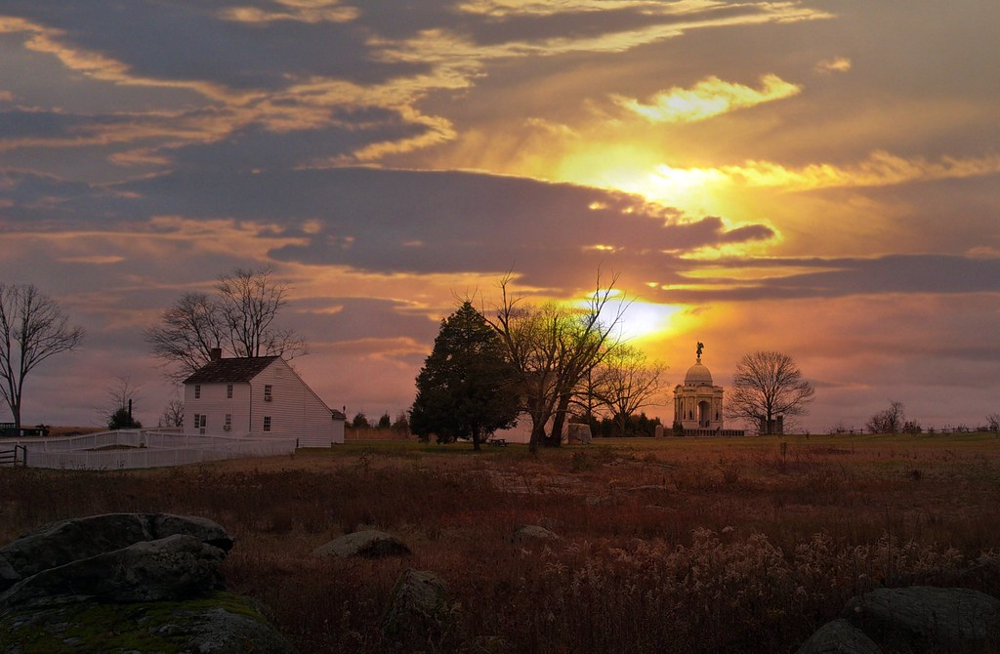
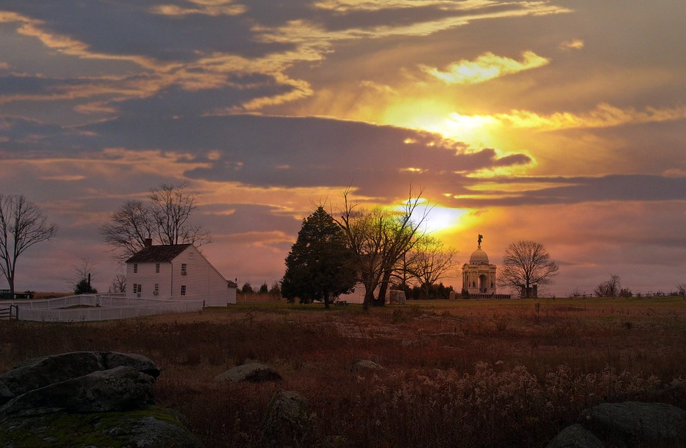

So, you have made the decision to visit the commonwealth of Pennsylvania. Smart move. The other smart move was coming to this website as oppose to other travel websites. My name is Danny Thomas. I spent majority of my life living in "PA (locals refer to Pennsylvania as just "PA) Sure you could go visit the top tourist destinations and come out with a slight experience, or you could go by my recommendations and get the full PA experience. We all know (and love) Philadelphia. So much history, museums and major sports teams that play there. But there is also much to do in other smaller cities and towns? This website will dive deep into those small towns and why you should visit them. This website will also go into food. I know what you're thinking! Cheesesteaks! Check out my food recommendations page and you'll see my top picks for the best cheesesteaks. Surprise! None of them are in Philly. For all you outdoor enthusiast, this website will include some of the best camping sights that I have personally stayed at over and over again, and trails you should seriously consider hiking. You will fit right in PA by using my website and not look like a lost tourist using others.
 
